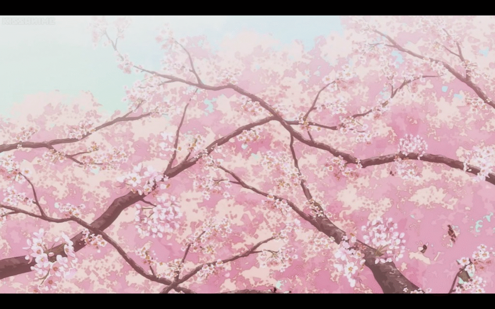
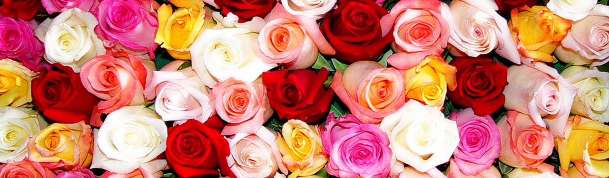
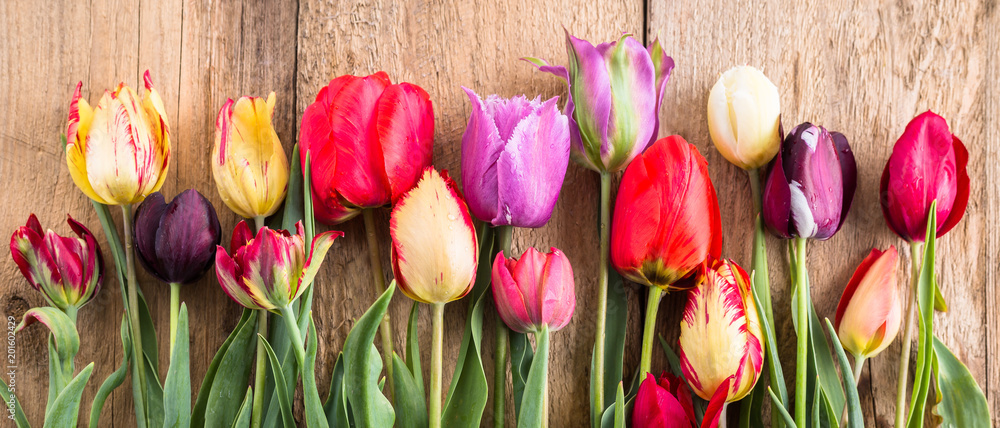
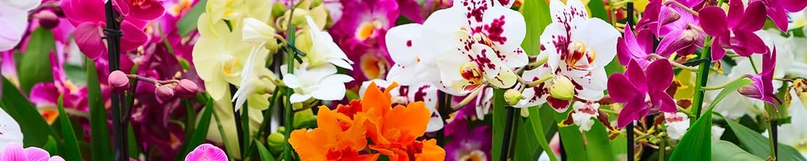
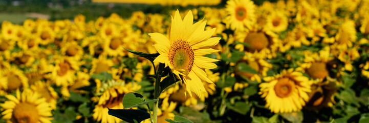

Explore the enchanting world of flowers with Blooms & Blossoms. Whether you're a seasoned gardener or just love flowers, discover a wealth of information on flower types, gardening techniques, and floral design ideas to brighten your day.
Discover Popular Flower Varieties
Welcome to our Flower Types guide, where you can explore a variety of popular flowers and learn about their unique characteristics and growing preferences. Whether you're planning your garden or simply want to appreciate the diversity of flowers, you'll find valuable insights here.
Roses

Roses are timeless symbols of love and beauty, cherished for their exquisite blooms and captivating fragrance. They belong to the genus Rosa and encompass a vast array of species, hybrids, and cultivars. Here's more about these iconic flowers:
- Varieties: Roses are available in numerous varieties, including hybrid tea roses, floribunda roses, grandiflora roses, and miniature roses. Each type has distinct characteristics in terms of bloom size, shape, and growth habit.
- Colors and Meanings:Roses come in a spectrum of colors, each carrying its own symbolism:
- Red Roses: Symbolize love, passion, and romance.
- Pink Roses:Convey admiration, gratitude, and joy.
- Yellow Roses: Represent friendship, warmth, and happiness.
- White Roses: Signify purity, innocence, and new beginnings.
- Orange Roses:Express enthusiasm, fascination, and energy.
- Lavender Roses:Portray enchantment, mystery, and elegance.
- Cultural Significance:Throughout history, roses have held cultural significance in various societies. They have been celebrated in art, literature, and mythology, often associated with goddesses, poets, and love stories.
- Growing Roses: Roses thrive in well-drained, fertile soil with ample sunlight. Proper care involves regular watering, pruning, and fertilizing to promote healthy growth and abundant blooms.
- Uses:Roses are versatile and used in various ways:
- Garden Ornament:Plant roses in flower beds, borders, or containers to enhance garden landscapes.
- Cut Flowers:Harvest roses for stunning floral arrangements, bouquets, and corsages.
- Rose Water and Essential Oils:Extracts from roses are used in cosmetics, perfumes, and aromatherapy products.
- Symbolism:Beyond their aesthetic appeal, roses symbolize deep emotions and sentiments, making them popular choices for weddings, anniversaries, and special occasions.
Tulips

Tulips are iconic spring-blooming flowers known for their bold colors and elegant forms, symbolizing renewal and the arrival of spring. Here's a detailed exploration of tulips, including their types and care tips:
- Types of Tulips:
- Single Early Tulips:These are among the earliest blooming tulips, featuring single cup- shaped flowers on sturdy stems.
- Double Late Tulips:Known for their ruffled and densely packed petals, double tulips resemble peonies and provide a lush, full appearance.
- Parrot Tulips:Characterized by their fringed and twisted petals, parrot tulips come in vibrant hues and add a touch of whimsy to garden beds.
- Darwin Hybrid Tulips:These tall tulips exhibit large, classic blooms in a wide range of colors, making them popular for landscape displays.
- Fringed Tulips:Notable for their frilly-edged petals, fringed tulips offer a unique texture and visual appeal.
- Care and Cultivation:
- Planting:Tulip bulbs should be planted in the fall, ideally before the ground freezes. Choose a location with well-drained soil and full sunlight.
- Soil and Watering:Tulips prefer fertile, loamy soil with good drainage. Water regularly during the growing season but avoid overwatering to prevent bulb rot
- Fertilization:Apply a balanced fertilizer before planting and again in early spring to promote healthy growth and vibrant blooms.
- Protection:Tulips may benefit from mulching to conserve moisture and protect bulbs from freezing temperatures during winter.
- Seasonal Care:
- Spring Display: Enjoy the stunning display of tulips in spring as they emerge in a kaleidoscope of colors. Remove spent blooms to encourage continuous flowering.
- After Blooming:Allow tulip foliage to wither naturally after blooming to replenish the bulb for the next season. Avoid cutting back foliage until it has completely yellowed.
- Uses:
- Garden Borders: Plant tulips in mass plantings or mixed with other spring-blooming bulbs for striking garden borders and landscapes.
- Containers:Tulips thrive in containers and can be used to create vibrant displays on patios, balconies, or doorstep gardens.
- Cut Flowers:Harvest tulips for stunning floral arrangements and bouquets, bringing the beauty of spring indoors.
Orchids

Orchids are revered for their exotic appearance and intricate blooms, making them one of the most diverse and sought-after plant families. Here's an in-depth guide to orchids, including their diverse species and essential care tips:
- Varieties of Orchids:
- Phalaenopsis (Moth Orchids): Known for their elegant, arching sprays of blooms and ease of care, Phalaenopsis orchids are popular for indoor cultivation.
- Cattleya Orchids: Often called "corsage orchids," Cattleya orchids produce large, showy flowers with vibrant colors and exquisite fragrance.
- Dendrobium Orchids:Dendrobium orchids feature a wide range of flower shapes and colors, thriving in bright, indirect light.
- Oncidium Orchids:Recognized for their cascading sprays of tiny flowers resembling dancing ladies, Oncidium orchids prefer warm and humid conditions.
- Vanda Orchids:Vanda orchids produce striking, large flowers and require bright light and high humidity to thrive.
- Paphiopedilum (Lady's Slipper Orchids): Characterized by their unique slipper-shaped pouches, Paphiopedilum orchids are well-suited for indoor environments.
- Care Requirements:
- Light:Most orchids prefer bright, indirect light. Avoid direct sunlight, especially during the hottest part of the day, which can scorch their leaves.
- Temperature and Humidity:Orchids thrive in temperatures ranging from 60-80°F (15-27°C) during the day and slightly cooler at night. Provide humidity levels of 50-70% by using a humidity tray or room humidifier.
- Watering: Water orchids thoroughly when the growing medium is nearly dry, typically every 1-2 weeks depending on environmental conditions. Allow excess water to drain to prevent root rot.
- Potting Medium:Use a well-draining orchid mix composed of bark, perlite, or sphagnum moss. Repot orchids every 1-2 years to refresh the growing medium and provide ample space for root growth.
- Fertilization:Feed orchids regularly with a balanced orchid fertilizer during the growing season to promote healthy foliage and vibrant blooms.
- Blooming and Reproduction:
- Orchids can bloom for several weeks or months, with flowers that vary greatly in shape, size, and color.
- Some orchids, like Phalaenopsis, can rebloom from their old spikes with proper care.
- Some orchids, like Phalaenopsis, can rebloom from their old spikes with proper care.Orchids can also be propagated through division of pseudobulbs or by growing new plants from keikis (baby plants) that develop along flower spikes.
- Uses and Display:
- Showcase orchids as stunning centerpieces or accents in indoor spaces, such as living rooms, offices, or conservatories.
- Orchids are also popular choices for elegant gifts and special occasions due to their exotic allure and long- lasting blooms.
Sunflowers

Sunflowers are iconic symbols of summer, renowned for their cheerful blooms and towering presence. Delve into the fascinating world of sunflowers with a comprehensive guide on growing, caring for, and utilizing these radiant flowers:
- Growing Sunflowers from Seed:
- Sunflowers are easy to grow from seed and thrive in sunny locations with well-drained soil.
- Plant sunflower seeds directly in the garden after the last frost date, spacing them 6-12 inches apart depending on the variety.
- Choose from a variety of sunflower cultivars, including traditional tall varieties, dwarf types for containers, and branching varieties with multiple blooms.
- Care Needs:
- Sunlight:Sunflowers require full sun to thrive and produce large, vibrant blooms. Ensure they receive at least 6-8 hours of direct sunlight daily.
- Support: Tall sunflower varieties may benefit from staking or support to prevent them from toppling over in strong winds.
- Watering: Water sunflowers regularly, especially during dry periods, to keep the soil consistently moist but not waterlogged.
- Fertilization:Apply a balanced fertilizer when planting and again during the growing season to promote healthy growth and robust blooms.
- Creative Uses:
- Cut Flowers:Harvest sunflowers for stunning floral arrangements and bouquets, adding a burst of sunshine to indoor spaces.
- Decorative Displays:Use sunflowers as focal points in garden beds or containers, creating vibrant displays that attract pollinators and birds.
- Edible Seeds:Roast sunflower seeds for a delicious and nutritious snack, or use them in baking and cooking for added flavor and texture.
- Dried Flowers:Preserve sunflower heads to use in dried flower arrangements, wreaths, or seasonal décor.
- Pollonator Attraction:
- Sunflowers are excellent attractors of bees, butterflies, and other beneficial pollinators, making them valuable additions to pollinator gardens.
- Encourage biodiversity and ecological balance by incorporating sunflowers into wildlife-friendly landscapes.
- Symbolism and Cultural Significance:
- Sunflowers symbolize positivity, happiness, and resilience, making them popular choices for gifts and celebrations.
- In art and literature, sunflowers have been depicted as symbols of vitality, optimism, and the beauty of nature.